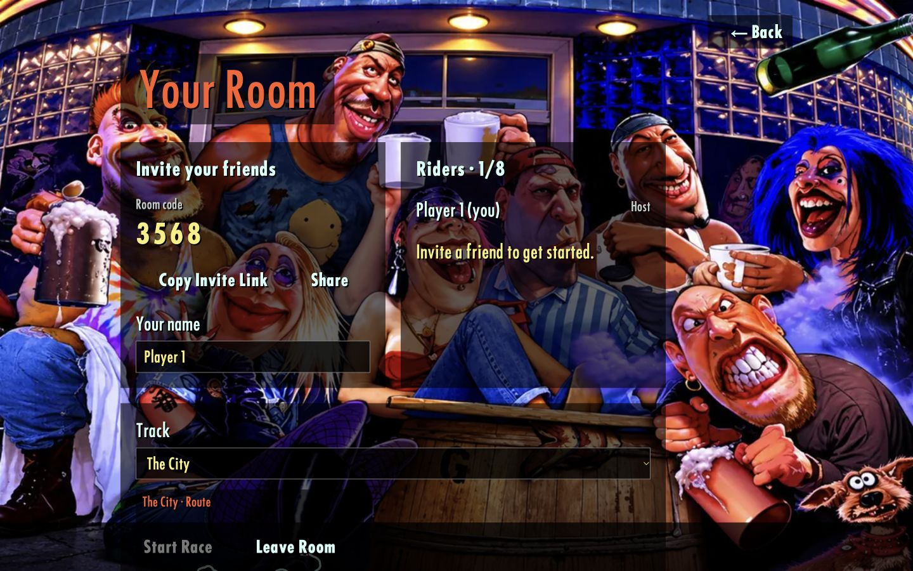

Road Rash multiplayer: play with friends
The Play with Friends mode lets riders join the same browser race using an invite link or room code. One rider hosts the room, chooses the track and starts the race when the group is ready.
Open Play with Friends in the gameCreate a room
- Open the game homepage and choose Play with Friends.
- Choose Create Room and wait for the room to connect.
- Use Copy Invite Link, or Share where your browser offers it. Send the link to the friends you want to race.
- Keep the room open while the other riders join. You can also give them the room code shown in the room.
Each friend plays from their own browser and device. A room supports up to eight human riders, including the host. It is a shared online race, not split-screen play on one device.

Join a friend's race
Open the invite link your friend sends and follow the joining screen. Alternatively, choose Play with Friends, paste the invite link or type the room code into Room code or invite link, then choose Join Room.
Use the complete code, including a leading zero if there is one. Check that your name appears in the room's rider list before waiting for the start. You can change your displayed room name there.
Choose the track and start
The host selects the track. Under Race Settings, the host can choose difficulty, turn cars on or off and choose whether AI riders fill empty places.
At least two human riders must be in the room before the host can choose Start Race. Other riders wait for the host rather than starting their own separate race. Leave the game tab open while the track loads.
When the race is over, the room shows results. The host can use Race Again once the room is ready for another race.
Can mobile and PC riders play together?
The room is joined through the browser, so riders can use the desktop or touch controls available on their devices. Everyone needs access to the same hosted game and its room service. See the mobile browser guide or keyboard and gamepad controls before racing.
If a room does not connect
- Check the invite. Confirm that the code matches the host's current room. An old invite may no longer lead to an active room.
- Check the rider count. If the room is full, ask the host to make space or create another room.
- Check your connection. Online rooms need a live connection; a network that blocks the room connection can prevent joining even if the homepage loads.
- Wait for the host. A joined rider cannot start the race. If Start Race is unavailable for the host, first check that another human rider has joined.
- Follow the message on screen. The game attempts to reconnect after a brief drop. If it asks you to rejoin, return through the current invite or create a fresh room.
For fighting alongside another rider, read the combat controls guide. A weapon animation still needs to reach the other rider to land a hit.